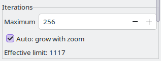
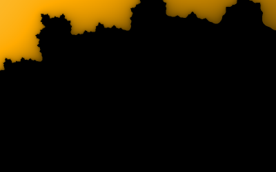
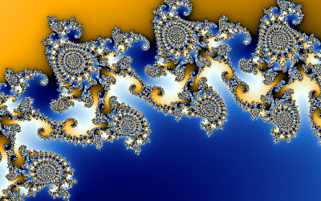

Each point is iterated until it escapes or the limit is reached; points that reach the limit count as inside the set and are painted black. Near the edge of the set points take longer and longer to escape, so the deeper you zoom the more iterations the detail needs.
 |  |
| Seahorse Valley with a limit of 50: the filaments dissolve into black | The same view with 2000 |
Too few iterations lose the fine filaments in black; too many only cost time (the black interior is where the cost goes, since those points never escape).
Try it: Seahorse Valley with 50 iterations, Try it: with 2000 (a fixed limit from a link or the command line switches Auto off; tick it again in the panel)